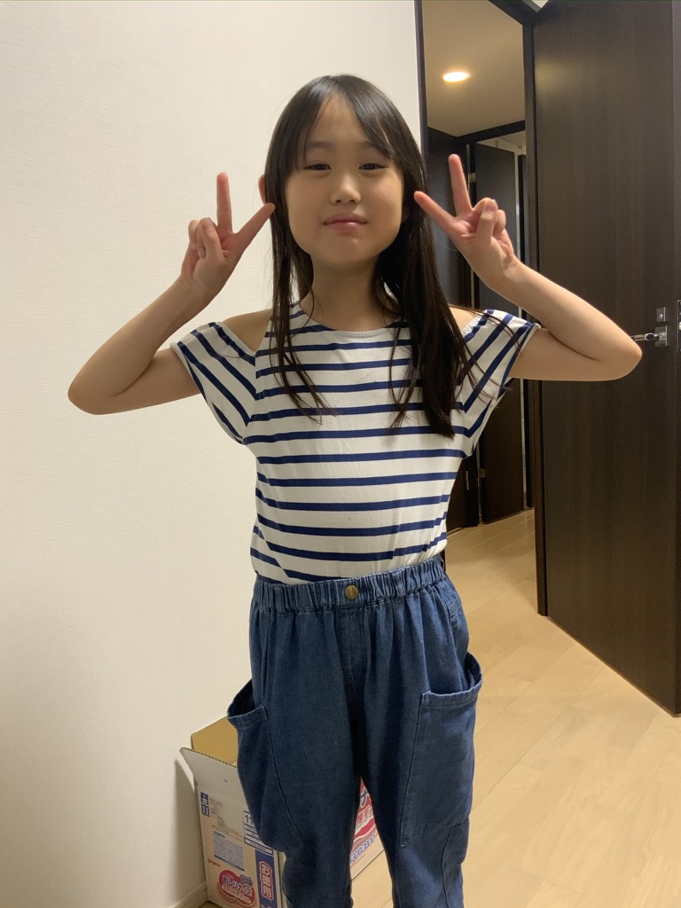
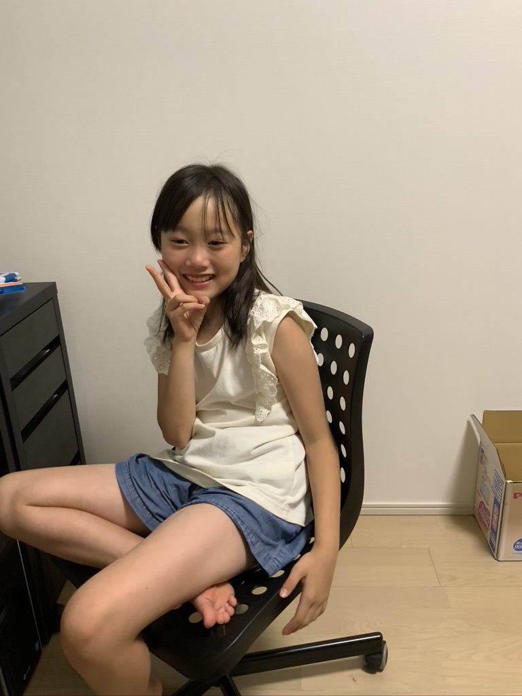
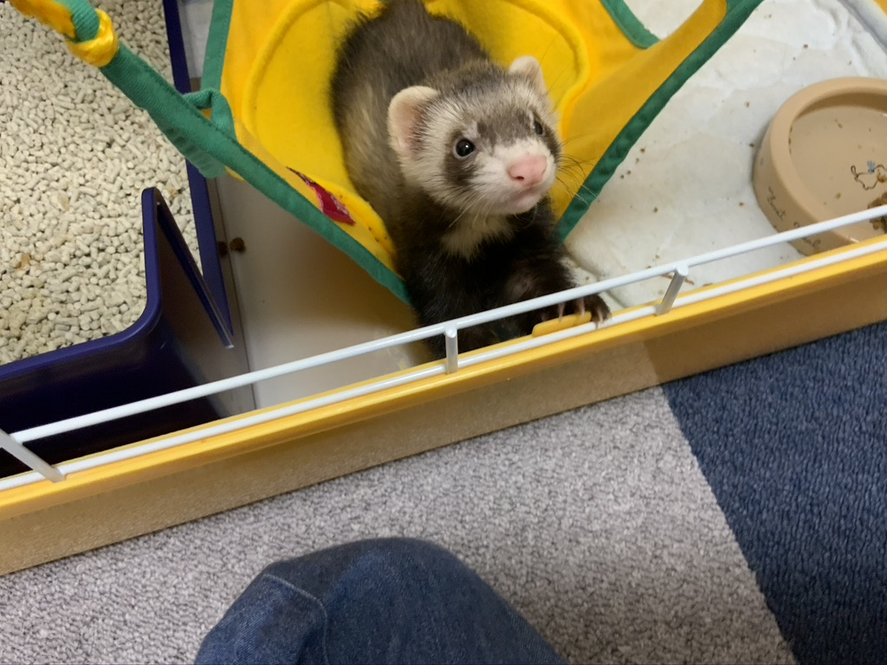
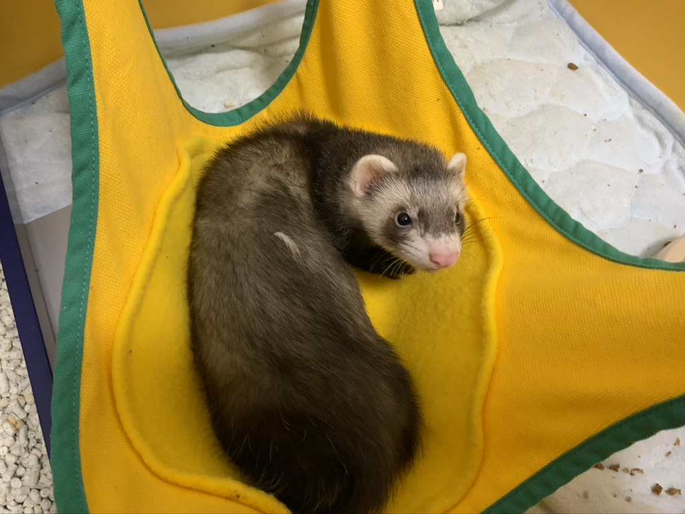
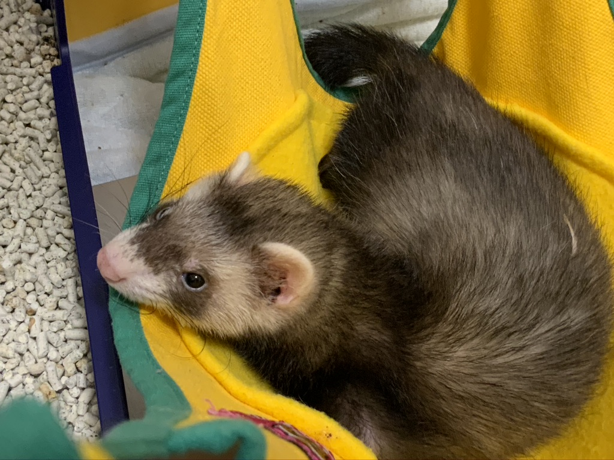
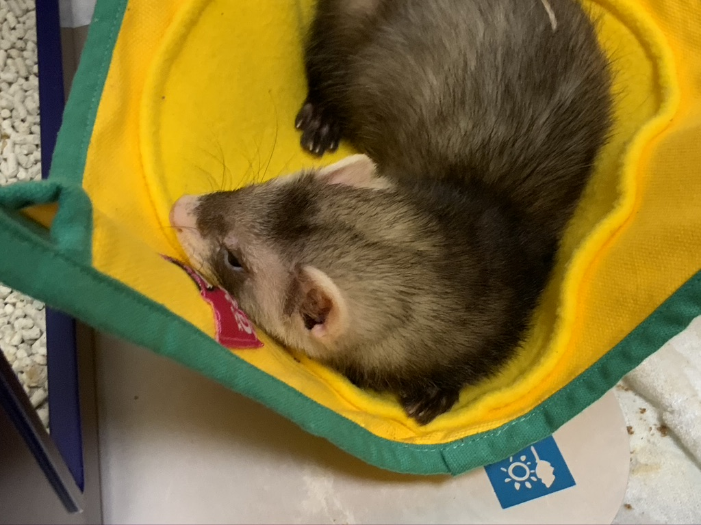
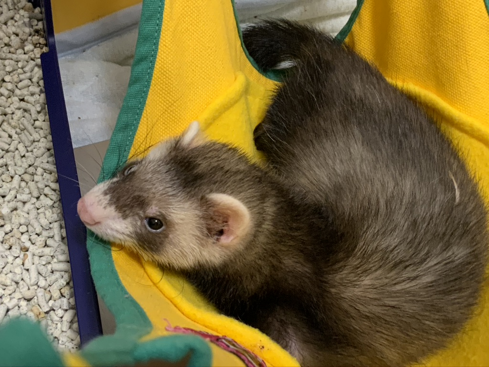
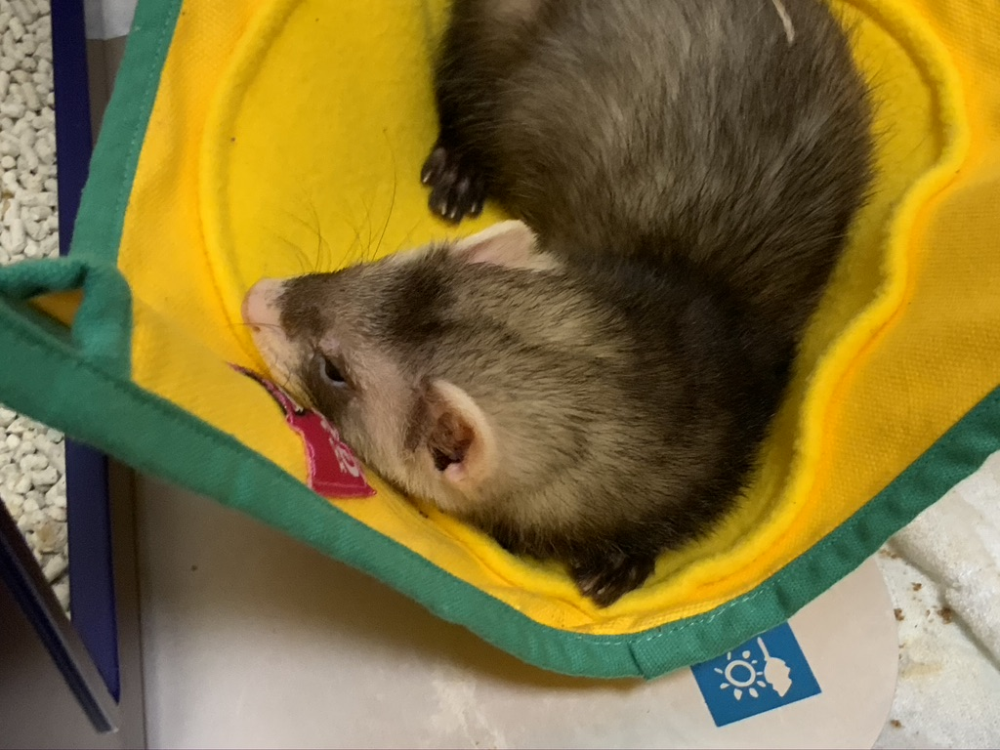

毎日の記録
8日目の感想（嬉しかったことbyつばき）
・懐いてくれたこと、噛まなくなったこと
・最初はめっちゃ噛まれてたけど、いっぱい遊んだからだんだんと甘噛みになってくれました。
8日目の感想（最近のれんについてbyつばき）
・最初はお湯でべちゃべちゃにしないと食べれなかったけど、ちょっと硬くても食べられるようになってきました。
・最近は遊んでいるときにお漏らしするようになった
8日目の感想（嬉しかったことbyゆず）
・最初は全然近づいて来てくれなかったけど、最近は名前を呼ぶと近づいて来てくれるようになった
・ハンモックで寝てくれるようになった、最初はマットの下で隠れていることが多かった
8日目の感想（最近のれんについてbyゆず）
・ご飯をいっぱい食べるようになった
8日目のれん君の写真
  


